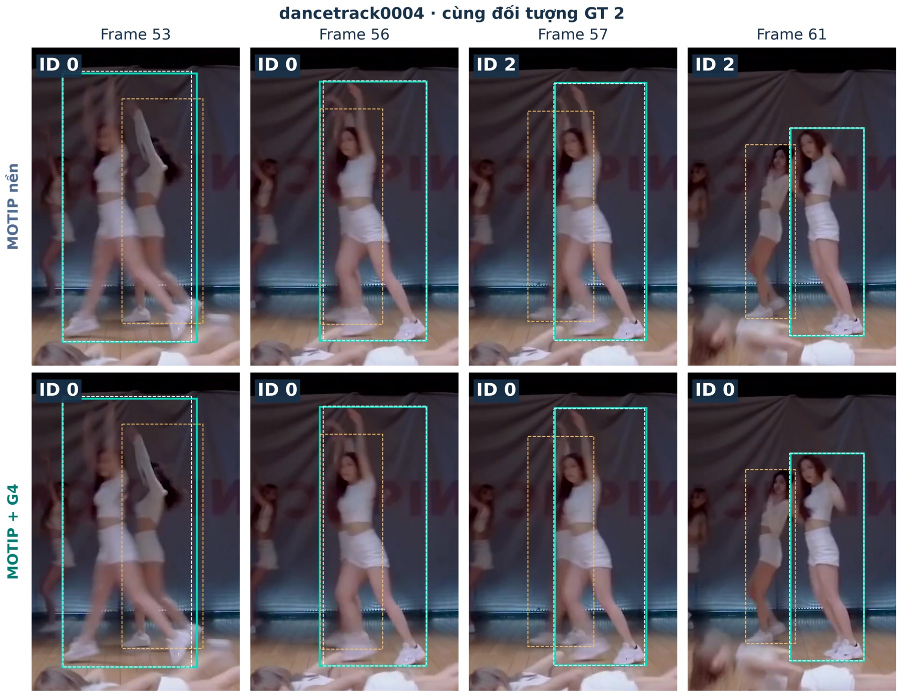
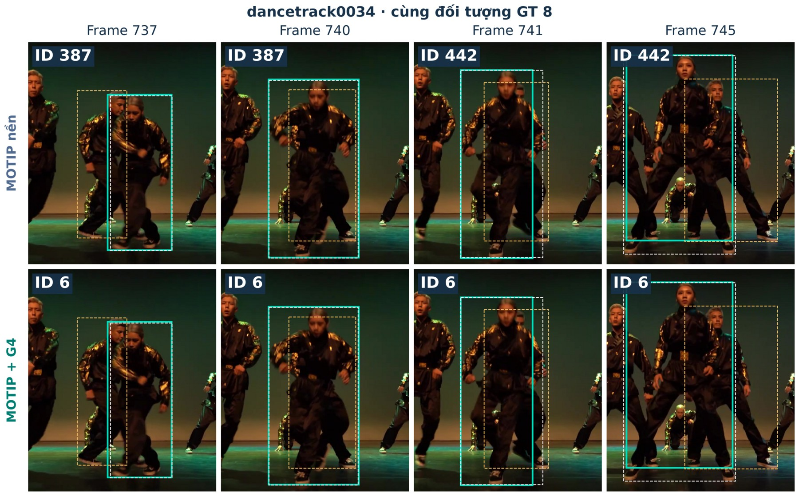

Tái hiện paper CVPR 2025 và bổ sung hình học quỹ đạo đa độ trễ
Vị trí đúng
chưa đủ.
Cần giữ đúng người
qua thời gian.
Giảng viên: TS. Trương Phước Hưng
Nguyễn Hồ Trường Sơn | 25C01020 | Thị giác máy tính
01
Phát hiện đúng người chưa đảm bảo đúng ID
Các nhãn ID phải đi theo cùng một người xuyên suốt video.
Phát hiện: người ở đâu?
Liên kết: ai là ai?
Nguyễn Hồ Trường Sơn | 25C01020 | Thị giác máy tính
02
Đầu vào là video; đầu ra là hộp và ID theo thời gian
Mỗi frame nhận các hộp phát hiện; tracker gán ID để nối cùng đối tượng qua các frame.
Nguyễn Hồ Trường Sơn | 25C01020 | Thị giác máy tính
03
DanceTrack tách độ khó liên kết khỏi ngoại hình
Dữ liệu video người múa/nhảy; trang phục giống nhau và chuyển động đa dạng.
41.796
frame train
40 sequence
25.508
frame validation
25 sequence
Nguyễn Hồ Trường Sơn | 25C01020 | Thị giác máy tính
04
Detector tạo hộp, confidence và đặc trưng
Cùng một detector tiền huấn luyện đóng băng trong các cấu hình được đối chiếu.
Deformable DETR
ResNet-50
Tọa độ hộp chuẩn hóa
Đặc trưng query 256 chiều
Nguyễn Hồ Trường Sơn | 25C01020 | Thị giác máy tính
05
Lịch sử được tổ chức theo track và thời gian
Padding và quan sát thiếu phải bị loại khỏi attention và loss.
B: batch · G: nhóm
T: thời gian · K: track
Nguyễn Hồ Trường Sơn | 25C01020 | Thị giác máy tính
06
ID embedding cho biết quan sát thuộc slot nào
ID slot là ký hiệu cục bộ; không phải lớp người cố định trên toàn dataset.
Lịch sử: embedding slot đã biết | Hiện tại: embedding ID rỗng
Nguyễn Hồ Trường Sơn | 25C01020 | Thị giác máy tính
07
Attention liên kết phát hiện với lịch sử
Self-attention trong frame; cross-attention truy vấn lịch sử mang ID.
Mask thời gian:
Nguyễn Hồ Trường Sơn | 25C01020 | Thị giác máy tính
08
Huấn luyện ID theo ngữ cảnh, không nhớ ID toàn cục
Hoán vị slot và tăng cường quỹ đạo giúp học quy tắc liên kết.
Nguyễn Hồ Trường Sơn | 25C01020 | Thị giác máy tính
09
Suy luận là một vòng đọc → quyết định → ghi
Dùng object-max; NEW và slot cũ được xử lý trong cùng vòng đời tracker.
LỌC PHÁT HIỆN
> 0,3
Điểm detector để đưa
vào bước liên kết.
TRACK MỚI
> 0,6
Điểm detector khi ID
được dự đoán là NEW.
ID HIỆN CÓ
≥ 0,2
Điểm ID tối thiểu;
slot vẫn phải hợp lệ.
TRACK VẮNG
30 frame
Giới hạn lưu lịch sử
khi thiếu quan sát.
Nguyễn Hồ Trường Sơn | 25C01020 | Thị giác máy tính
10
Bổ sung geometry như một tín hiệu tương thích riêng
Không thay detector hay ID Decoder; chấm trực tiếp từng cặp phát hiện–track.
MOTIP nền
Đặc trưng đối tượng
+ lịch sử mang ID
↓
Logit liên kết nền
Hình học G4
Hộp hiện tại
+ quỹ đạo của track ứng viên
↓
Điểm tương thích hình học
+
Hai nhánh chấm cùng các ID ứng viên; logit được căn chỉnh rồi hợp nhất.
Nguyễn Hồ Trường Sơn | 25C01020 | Thị giác máy tính
11
G4 mã hóa lịch sử hộp thành mô tả hình học 66 chiều
Mỗi cặp phát hiện–track có một vector; lag lấy theo timestamp và đi kèm validity mask.
Hộp và vị trí
Hộp hiện tại + bốn hộp quá khứ; dx, dy chuẩn hóa theo hộp hiện tại.
Kích thước
Log thay đổi chiều rộng, chiều cao và diện tích.
Chuyển động
Vận tốc, dư ngoại suy và biến thiên vận tốc.
Thời gian và dữ liệu thiếu
Mã lag cùng validity mask; không thay lag thiếu bằng quan sát gần nhất.
Nguyễn Hồ Trường Sơn | 25C01020 | Thị giác máy tính
12
G4–MLP bổ sung điểm hình học vào logit ID
25.217 tham số; nhiệt độ và trọng số fusion giữ cố định.
Nguyễn Hồ Trường Sơn | 25C01020 | Thị giác máy tính
13
Tiền huấn luyện: đổi nguồn hộp, giữ cùng một MLP
Chỉ dữ liệu train; mã ID dùng để tạo nhãn, không nằm trong vector G4.
Pred–Pred giữ nguyên tọa độ detector; GT chỉ giúp nối lịch sử và tạo nhãn cùng/khác ID.
Nguyễn Hồ Trường Sơn | 25C01020 | Thị giác máy tính
14
Hàm mất mát tổng giám sát cả hai đầu ra
Khi học liên kết, ID của track mục tiêu giám sát điểm hợp nhất và điểm hình học.
Điểm hợp nhất
Học quyết định ID cuối cùng
trên các query hợp lệ.
Điểm hình học
Chỉ giám sát track hiện hữu
có lag hợp lệ; loại NEW.
Nguyễn Hồ Trường Sơn | 25C01020 | Thị giác máy tính
15
Ba ngân sách lồng nhau, một tập đánh giá chung
Subset nguyên sequence; không lấy frame rời rạc và không trùng train/validation.
Full validation: 25.508 frame | chọn checkpoint trên small validation 3.894 frame
Nguyễn Hồ Trường Sơn | 25C01020 | Thị giác máy tính
16
Đối chiếu MOTIP nền với MOTIP + G4
Cùng detector, dữ liệu, augmentation, lifecycle và quy tắc đánh giá.
Thiết lập chung
Cấu hình
Seed / epoch
42, 123, 3407 / 10
Batch / accumulation / precision
1 / 4 / FP32
Optimizer / LR / weight decay
AdamW / 0,0001 / 0,0005
LR milestone
6 và 9, hệ số 0,1
Phần được học
Trajectory modeling + ID Decoder + ID embedding
MOTIP + G4 có thêm G4–MLP và bước tiền huấn luyện train-only.
Nguyễn Hồ Trường Sơn | 25C01020 | Thị giác máy tính
17
MOTIP + G4 cải thiện HOTA, AssA và IDF1
Cùng toàn bộ DanceTrack validation; không đối chiếu với bảng SOTA test.
Trung bình ± độ lệch chuẩn mẫu, n = 3; checkpoint chọn bằng small-validation AssA.
Nguyễn Hồ Trường Sơn | 25C01020 | Thị giác máy tính
18
Mức tăng AssA đạt +7,36 đến +8,82 điểm
Chênh lệch trên thang 0–100, không phải phần trăm tương đối.
Train 5%
+7.36
điểm AssA
MOTIP nền 17.32
MOTIP + G4 24.68
Train 10%
+8.82
điểm AssA
MOTIP nền 26.69
MOTIP + G4 35.51
Train 15%
+7.53
điểm AssA
MOTIP nền 30.73
MOTIP + G4 38.25
Nguyễn Hồ Trường Sơn | 25C01020 | Thị giác máy tính
19
Cả chín cặp seed/ngân sách đều cải thiện AssA
Ba seed hỗ trợ nhận xét nhất quán, chưa phải bằng chứng thống kê dứt khoát.
Nguyễn Hồ Trường Sơn | 25C01020 | Thị giác máy tính
20
ID switch giảm, chi phí tính toán vẫn có
Đọc IDSW cùng AssA/IDF1; không đồng nhất FPS phát video với FPS suy luận.
Thêm 25.217 tham số; FPS seed 42 trên cùng máy giảm khoảng 5–6%.
Nguyễn Hồ Trường Sơn | 25C01020 | Thị giác máy tính
21
G4 giữ ID khi các đối tượng giao cắt
Đối chiếu toàn bộ hình minh họa như trong báo cáo; không cắt riêng đối tượng.

Tình huống 1
Giao cắt · GT 2
DanceTrack 0004
Frame 53 · 56 · 57 · 61
MOTIP nền
ID 0 → 2
MOTIP + G4
giữ ID 0
GT chỉ dùng kiểm chứng hậu nghiệm.
Nguyễn Hồ Trường Sơn | 25C01020 | Thị giác máy tính
22
G4 duy trì ID khi chồng lấn
Đối chiếu toàn bộ hình minh họa như trong báo cáo; không cắt riêng đối tượng.

Tình huống 2
Chồng lấn · GT 8
DanceTrack 0034
Frame 737 · 740 · 741 · 745
MOTIP nền
ID 387 → 442
MOTIP + G4
giữ ID 6
GT chỉ dùng kiểm chứng hậu nghiệm.
Nguyễn Hồ Trường Sơn | 25C01020 | Thị giác máy tính
23
Bằng chứng tích cực nhưng kết luận có phạm vi
Không đồng nhất validation trên subset với ưu thế phổ quát ở full-data/test.
Đã quan sát
9/9
cặp tăng AssA
9/9
cặp giảm IDSW
Detector được giữ cố định
Chưa chứng minh
Ưu thế khi huấn luyện end-to-end
trên toàn bộ dữ liệu
Khả năng tổng quát hóa trên test độc lập
Hiệu quả khi cân bằng đầy đủ chi phí tính toán
MOTIP + G4 có chi phí pretrain riêng; validation dùng chọn checkpoint nằm trong full validation.
Nguyễn Hồ Trường Sơn | 25C01020 | Thị giác máy tính
24
Liên kết học được
+ hình học tường minh
Một cải tiến nhỏ, kiểm chứng bằng dữ liệu và đối chứng matched.
Tái hiện MOTIP.
Thêm G4 theo ứng viên.
Đánh giá trên ba ngân sách.
Cải thiện nhất quán trong
phạm vi đã khảo sát.
Nguyễn Hồ Trường Sơn | 25C01020 | Thị giác máy tính
25
Phụ lục: G4 gồm đúng 66 chiều
Độ dời chuẩn hóa theo hộp hiện tại; lag và các đặc trưng động học thiếu có mask riêng.
Nhóm đặc trưng
Số chiều
Hộp hiện tại + bốn hộp lịch sử
4 + 16
Độ dời tương đối + log tỷ lệ w/h
16
Vận tốc, dư ngoại suy + biến thiên vận tốc
8 + 4
Validity lag / vận tốc / gia tốc
4 + 4 + 2
Log thay đổi diện tích + mã lag
4 + 4
Tổng
66
Nguyễn Hồ Trường Sơn | 25C01020 | Thị giác máy tính
26
IDF1 và IDSW đo hai khía cạnh khác nhau
IDF1 xem xét liên kết danh tính trên toàn chuỗi; IDSW đếm các lần đổi ID.
IDF1
Độ nhất quán danh tính trên toàn quỹ đạo.
GT: A
Pred
A
A
A
A
A
A
A
A
A
A
Một ID dự đoán được giữ xuyên suốt chuỗi.
IDSW
Số lần một đối tượng được gán ID khác.
GT: A
Pred
A
A
A
A
A
4
4
8
8
8
1 lần đổi ID
IDF1: cao hơn tốt hơn • IDSW: thấp hơn tốt hơn
Nguyễn Hồ Trường Sơn | 25C01020 | Thị giác máy tính
27
Phụ lục: tất cả seed tại ngân sách 15%
Epoch được chọn theo cùng quy tắc small-validation AssA.
Seed
Model
Epoch
AssA
IDF1
IDSW
42
MOTIP nền
6
30.037
46.892
17,310
42
MOTIP + G4
9
38.217
53.612
9,727
123
MOTIP nền
8
31.923
49.334
12,120
123
MOTIP + G4
4
37.442
52.738
9,503
3407
MOTIP nền
6
30.218
47.897
13,936
3407
MOTIP + G4
8
39.095
54.322
9,884
Nguyễn Hồ Trường Sơn | 25C01020 | Thị giác máy tính
28
Phần kế thừa và phần thực hiện được tách rõ
Đồ án sử dụng mã nguồn tác giả; không nhận phát minh MOTIP hay detector.
Kế thừa
Thực hiện / tích hợp
MOTIP, Deformable DETR, TrackEval
Nhánh G4 theo cặp + kiểm thử
Ý tưởng ID prediction của Gao và cộng sự
Matched MOTIP nền/MOTIP + G4, ba ngân sách, ba seed
Checkpoint detector tiền huấn luyện
GT-linked geometry pretrain train-only
Giấy phép và trích dẫn gốc
Code, manifest, checksum và demo
Nguyễn Hồ Trường Sơn | 25C01020 | Thị giác máy tính
29
Chạy lại demo bằng checkpoint được bàn giao
Cần CUDA và extension deformable attention tương thích môi trường.
python scripts/run_demo_inference.py --model both
python scripts/render_demo.py
Nguyễn Hồ Trường Sơn | 25C01020 | Thị giác máy tính
30
Nguồn khoa học và mã nguồn chính
Liên kết đầy đủ, attribution và protocol nằm trong báo cáo.
Gao, Qi, Wang — Multiple Object Tracking as ID Prediction. CVPR 2025.
Zhu và cộng sự — Deformable DETR. ICLR 2021.
Sun và cộng sự — DanceTrack. CVPR 2022.
Luiten và cộng sự — HOTA. International Journal of Computer Vision.
Mã nguồn: github.com/MCG-NJU/MOTIP; github.com/JonathonLuiten/TrackEval
Nguyễn Hồ Trường Sơn | 25C01020 | Thị giác máy tính